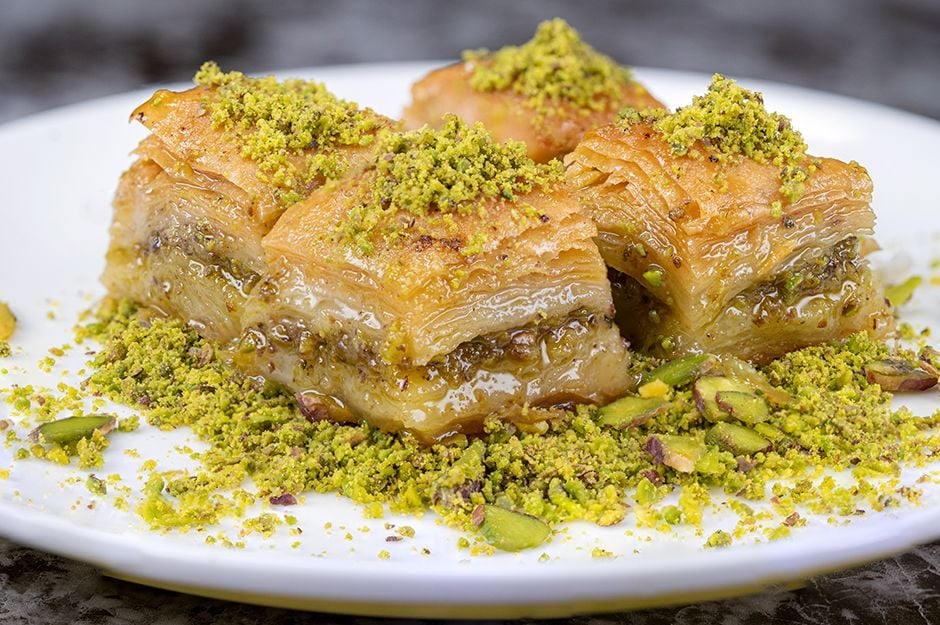

Ingredients
- 1 package of phyllo dough
- 2 cups of chopped nuts (walnuts, pistachios, or almonds)
- 1 cup of unsalted butter, melted
- 1 teaspoon of ground cinnamon
- 1 cup of granulated sugar
- 1 cup of water
- 1/2 cup of honey
- 1 teaspoon of vanilla extract
Instructions
- Preheat your oven to 350°F (175°C).
- In a bowl, combine the chopped nuts and ground cinnamon.
- Brush a baking dish with melted butter.
- Layer about 10 sheets of phyllo dough in the dish, brushing each layer with melted butter.
- Add a layer of the nut mixture on top of the phyllo dough.
- Continue layering phyllo dough and nuts until you run out of both, finishing with about 10 sheets of phyllo dough on top.
- Using a sharp knife, cut the baklava into diamond or square shapes.
- Bake in the preheated oven for about 50-60 minutes or until golden brown and crisp.
- While the baklava is baking, make the syrup by combining the sugar, water, honey, and vanilla extract in a saucepan. Bring to a boil and simmer for about 10 minutes until slightly thickened.
- Remove the baklava from the oven and immediately pour the hot syrup over it, making sure to cover all the pieces.
- Allow the baklava to cool completely before serving.